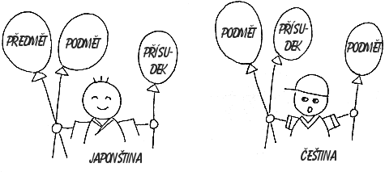

Čeština, stejně jako Angličtina a Španělština je jazyk s pořádkem podmět-přísudek-předmět. Pořádek slov v Japonské větě je podmět-předmět-přísudek, jako například v Korejštině a Turečtině.
| Podmět | Předmět | Přísudek |
| Tanaka-san wa Pan Tanaka | ringo o jablko | tabemasu. jí. |
| Tom-san wa Tom | terebi o televizi | mimašita sleduje. |
"San" je oslovení, přidávané za jméno(takže nemůžete oslovovat sama sebe)
"Wa" a "o" jsou částice. Jako předložky v Češtině, jenom se dávají za podstatná jména. Nahrazují skloňování. Pro správnou stavbu Japonské věty jsou částice velmi důležité.
Věnovat se jim budeme později.

Vytvoření otázky je v Japonštině tak snadné! Celá věta zůstane nezměněna, jenom se na konec přidá částice "ka". Otazníky se v Japonštině nepoužívají.
| Tanaka-san wa ringo o tabemasu ka. 田中さんはりんごを食べますか。 | Jí pan Tanaka jablko? |
| Tom-san wa terebi o mimašita ka. トムさんはテレビを見ましたか。 | Sleduje Tom televizi? |